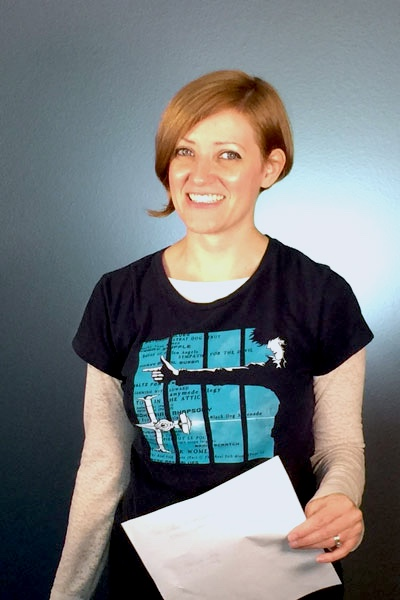

Rebekah Harden | WDD 130
Hello Everyone! My name is Rebekah Harden. I am from Colorado and I currently live in Florida. I have two children - both boys are now young adults. One is getting ready to go on his mission to Atlanta, Georigia. My husband is my best friend. We have been married for 23 years. I enjoy spending time with my family, being in nature, staying active, and oil painting. I have a certificate in Financial Management from the Air Force and I completed my certificate in Family History Research from BYU. I am currently working on my second BYU certificate in Web and Computer Programming. I love learning about history, cultures, and trying new things. I like trying food from around the world and I like cooking recipes from the countries and regions that my ancestors came from.